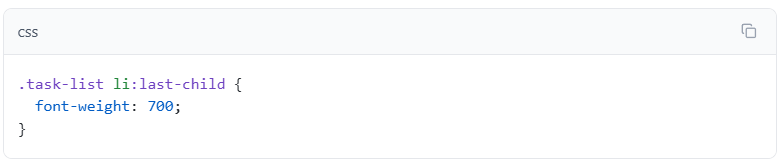
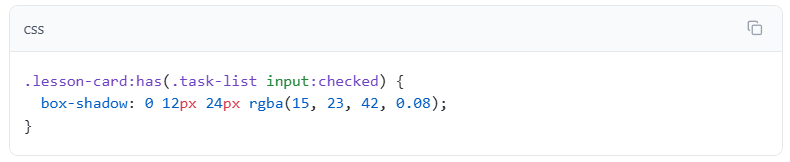
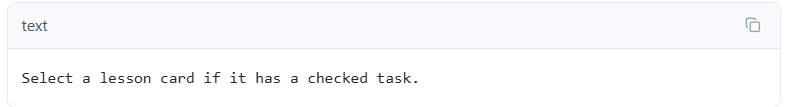
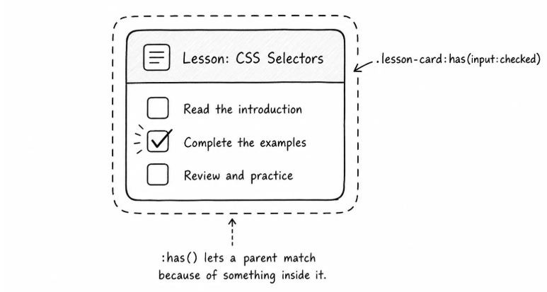

Beginner
Selectors recap
Review class selectors, group selectors, and descendant selectors.
CSS practice
Modern selectors can match attributes, states, structure, and parent-child relationships.
Beginner
Review class selectors, group selectors, and descendant selectors.
Advanced
Use attributes, structure, and parent-aware selectors carefully.
Best after you understand specificity.
Beginner
Apply selectors to a small lesson dashboard.
Sometimes the useful clue is not an attribute. It is the element's position in a group.
The task list has several list items. If you want space between items, you could add a class to every item after the first one, but the structure already tells CSS what to do.
Add spacing between list items with the adjacent sibling selector:

li + li means "match a list item that comes immediately after another list item." The first item does not match, because it does not come after a previous item. The later items match, so they get top margin.
This is useful for spacing repeated items because it only creates space between items, not before the first item.
You can also select the last item in a group:

:last-child matches an element when it is the last child inside its parent.
This example makes the last task heavier so you can see the match. In real projects, structural selectors are often used for spacing, borders, dividers, and small layout adjustments.

Most selectors match an element based on itself or its ancestors.
:has() lets you match a parent based on something inside it.
In the lesson cards, some tasks are already checked. You can style a card differently when it contains at least one checked task:

:has(.task-list input:checked) means "match this card if it has a checked input inside .task-list."
The selector reads like a condition:

That is useful for parent styling. The card can react to something inside it without adding a separate .has-progress class.
Use :has() when the parent truly depends on a child or descendant. If the parent already has a meaningful class or data attribute, that simpler hook may still be better.

Here is the practical map:
| Selector | Question it asks |
|---|---|
| [aria-current="page"] | Does this element have this exact attribute value? |
| [href^="https://"] | Does this attribute value start with this text? |
| li + li | Does this element come immediately after another matching element? |
| :last-child | Is this element the last child of its parent? |
| :not(...) | Does this element not match this condition? |
| :is(...) | Does this element match any option in this group? |
| :where(...) | Does this element match any option, without adding selector strength? |
| :has(...) | Does this element contain something that matches? |
The useful habit is not to use the newest selector everywhere. The useful habit is to use what is clearer and makes sense.
Modern selectors are best when they make your CSS match the real meaning or structure already in the HTML. If a selector becomes hard to explain out loud, it is probably too clever.